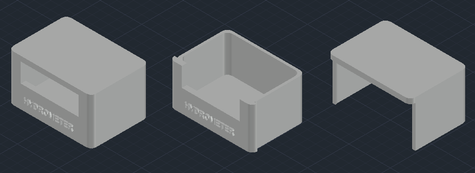

Per contenere la scheda Arduino e fissare lo schermo LCD abbiamo creato un contenitore apposito utilizzando la stampante 3D della nostra scuola.
Per il design siamo partiti da un modello virtuale in AutoCAD, poi lo abbiamo stampato e rifinito in base ai nostri bisogni.
Il contenitore si chiude ad incastro ed ha uno spazio per fissare, sempre ad incastro, lo schermo LCD.